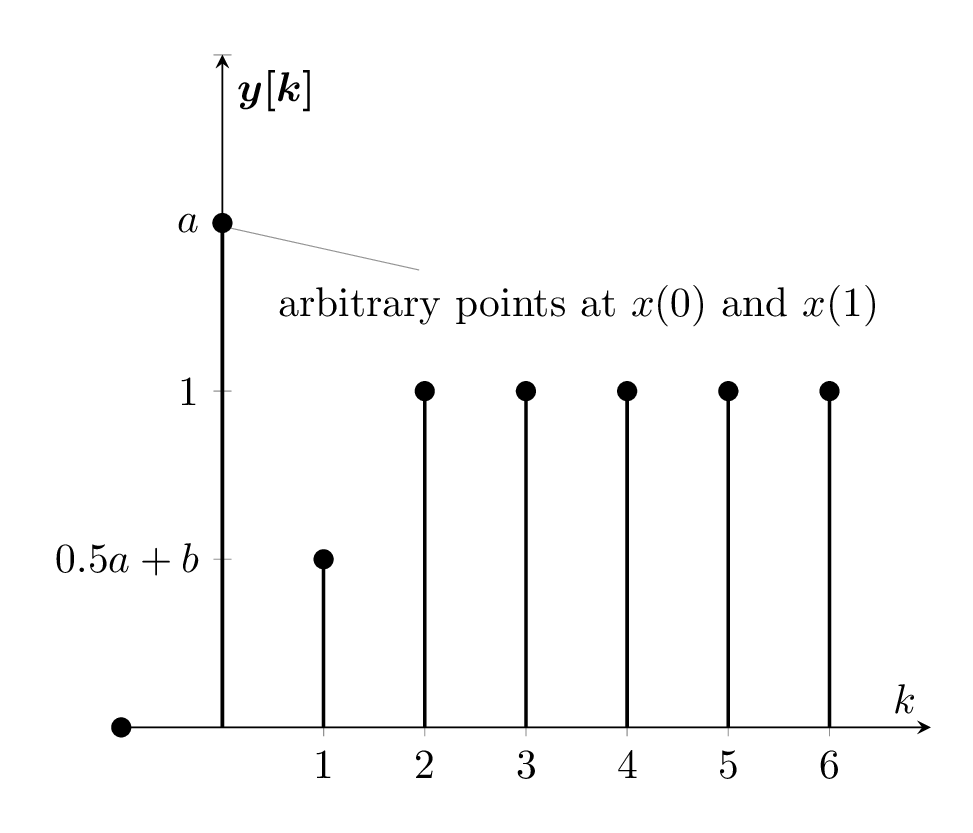

\documentclass[border={10pt}]{standalone}
\usepackage{tikz,pgfplots,filecontents,amsmath}
\pgfplotsset{compat=1.5}
\begin{filecontents}{data.dat}
n yn
-1 0
0 6
1 2
2 4
3 4
4 4
5 4
6 4
\end{filecontents}
\begin{document}
\begin{tikzpicture}
\begin{axis}
[%%%%%%%%%%%%%%%%%%%%%%%%%%%%%%%%%%%
axis x line=middle,
axis y line=middle,
every axis x label={at={(current axis.right of origin)},anchor=north west},
%every axis y label={at={(current axis.above origin)},anchor= north west},
every axis plot post/.style={mark options={fill=black}},
xlabel={$k$},
ylabel={$\boldsymbol{y[k]}$},
xtick={0,1, ..., 6},
xmax=7,
ymin=0,
ymax=8,
yticklabels={
$0$,
$0$,
$0.5a+b$,
$1$,
$a$
},
]%%%%%%%%%%%%%%%%%%%%%%%%%%%%%%%%%%%
\addplot+[ycomb,black,thick] table [x={n}, y={yn}] {data.dat};
%\addplot[mark=*] coordinates {(1,2)} node[pin=45:{}]{} ;
\addplot[] coordinates {(0,5.825)} node[pin=320:{arbitrary points at $x(0)$ and $x(1)$}]{} ;
\end{axis}
\end{tikzpicture}
\end{document}Created by David Li